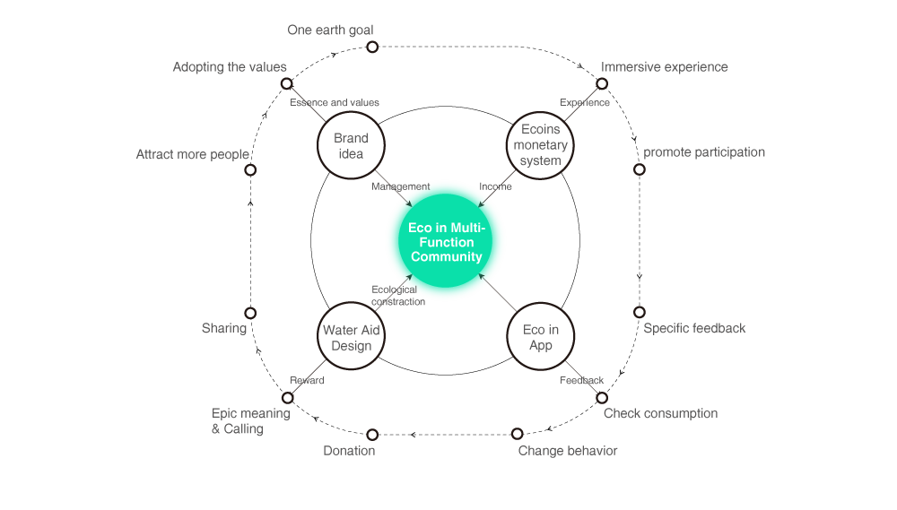
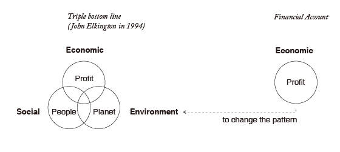

ECO IN MALAN LAKE
↳ Introduction
Eco in is a service system designed for Malan Lake Project, which enables expense settlement for tourists’ accommodation, food and other daily activities within Malan Lake Region. The project includes cost accounting system, an app, and water – aid service. It aims to modify user’s behaviour related to environments, improve public’s environmental consciousness, and ultimately build a culture of sustainability.
↳ Background
⇥ Malan Lake Project

Location:37°54′00″N, 105°02′39″E
Malan Lake, located in China’s fourth largest desert, the Tengger Desert, is situated in the Alxa Left Banner in Inner Mongolia’s Autonomous Region, near the southwest, bordering Gansu province.
The climate is dry and rainless, windy and dusty, the annual natural precipitation is 147mm yet the evaporation is nearly 3000mm. The area is suffering water resource shortages, high degree of mineralization and salinization of soil desertification therefore ecology environment is extremely fragile.
In April of 2011, Hong Kongese entrepreneur Yuen Shu Wah applied for and founded Springfield Ecology Limited and started to promote the Malan Lake reforestation project. As of the
end of 2016, the sum of funds put into the Malan
Lake Reforestation Project had already reached
11.42 million.
⇥ Reforestation Plan by Malan Lake Base
Left four images: Reforestation plants: Haloxylon, Poplar, Salix psammophila and Oleaster
Right four images: De-desertification ways: Straw Checker Board Barries, Nylon Net Barriers, Mechanical Burying, Pressurized Water Planting.
The reforestation plan is about planting different plants and using different ways to trap the sand and prevent dune migration. Apart from barriers sand trapping, many other ways were conducted for de-desertification and afforestation, including rotational grazing, efficient irrigation systems, plant nursery construction, herbage species introduction.
May 2012 (before) | May 2016 (After)
Compare and Contrast of the reforestation effect
During 2011-2016, 2 million seedlings and 2.25 million cuttings were planted, 2005 kilograms seeds were sowed. The average survival rate of plants is up to 70%. The project by far has planted 20km2 area of trees in the desert.
⇥ Objectives of Mid-to-Long Term Plan Research
The ultimate aim of the Malan Lake Project is to design a sustainable development model of desertification control and to enlighten stakeholders to rethink the relationship between human and nature. In order to realize this
goal we are planning to build an multifunction integrated open community with vacation, leisure, conference, entertainment
and education services.
⇥ Challenges
❶ Desertification control is a most difficult and inefficient undertaking which demands a surge of investment with no short-term returns.
❷The sustained investment to protect the desert is hard to secure in the long run because the current funding source is Mr. Yuan Shuhua’s personal fortune. Planting is no other mean to restore the ecosystem of the singularity technology and methods.
❸The project did not cause social concern and participation for the reason of lacking shared communication, social impact and interaction with the indigenous people.
↳ Research
After primary & secondary research, demand analysis and competitor analysis, a classical persona is built. In the demand analysis we took government, local people, reforester, tourism, donator, media, volunteer as stakeholders into account. Based on their demand and priority, we made our primary objectives
Competitors include the Alto Atacama(Chile), Hotel Longtitute 131(Australia), Organic Modern Estate(USA), and other 8 places. We classified them into 4 catogories and built classical persona.
Competitor Analysis Overview
⇥ Classical persona
⇥ Brain storming
↳ Concept Explorations
⇥ The concept
The concept of the model includes four main parts: brand idea, ecoins monetary system, eco in app, and water aid design. To be specific, users get aware of brand idea and values through brand essence. Ecoins monetary system helps calculate consumption and offer an immersive experience. The App is a window where users receive feedback and make changes in environmental attitude and behaviour. Lastly, the water aid service provides water and recyclable construction material to the region and promotes participation and engagement of the users.

There are four function blocks in the integrated planning which are vacation, conference, leisure and entertainment.
Buildings are divided into main building and ancillary buildings: The main buildings should have rooms, restaurants, conference centers, exhibitions and other functions; Ancillary buildings are mainly involve staff quarters, power supply, warehouses and other logistics space;
The infrastructure should include swimming pools, parking lots and other functions;
Topview of the construction plan of multi-functional community
➀ Main building
➁ Shared building
➂ Desert kitchen
➃ Bonfire
➄ Star gazing
➅ Recreation area
➆ Planting experience
➇ Orienteering
⑨ Desert safaris

Arrival and Reception

Desert Kitchen

Water company (Outside Malan Lake)

Shared buildings constructed by water bottles

Star gazing

Construction company
Overview :
↳ Service & System
⇥ The challenge of public welface:
People are willing to help in protecting the environment, but...
When it comes to individuals, the process and activities are tedious and with little feedback, the consequences of deserfication seems far away from daily life ... There is still a long way to go to motivate people transition from willing to help to participate in.
⇥ Solution
Our solution See full size here
The whole solution consists of four parts: The brand idea, ecoins monetary system, water aid design, and eco in app.
We take human motivations into considerations when designing the service system eco in. It enables expense settlement for tourists’ accommodation, food and other daily activities within Malan Lake Region. With the application of gamification, eco in is able to motivate people's participation, engagement, and loyalty through five aspects including adopting the values, setting an ultimate goal, offering immersive experience, specific feedback, and tangible rewards.
⇥ Service blueprint
See full size here
⇥ System
As shown on the system map, there are mainly three subsystems, including Malan Lake Community, water company and construction company.
Malan Lake Community offers service to tourists on food&drink, accommodation, activities and so on. Tourists bring capital to the community. With these funds, the water company can transport water (with specifically designed bottles) to Malan lake.
The after-use bottles can be utilized to build shared-buildings with specific architectural design requirements offered by the service department.
↳ Brand idea
The concept of the model includes four main parts: brand idea, ecoins monetary system, eco in app, and water aid design. To be specific, users get aware of brand idea and values ​​through brand essence. Ecoins monetary system helps calculate consumption and offer an immersive experience. The App is a window where users receive feedback and make changes in environmental attitude and behaviour. Lastly, the water aid service provides water and recyclable construction material to the region and promotes participation and engagement of the users.
⇥ Brand signature
⇥ Adopting the values
"Change what you count and you change what counts".
In Malan Lake, price of goods is positively correlated with its ecological cost. The low-price goods that industry offers to people is based on an overdrawn ecological environment. Because of there is no compulsary regulations make companies pay for pollution, many of them still regard environmental cost as external cost since no compulsary regulations make them pay for pollution.

Left figure shows the contrast of environmental full-cost accounting and traditional accounting. Triple bottom line (TBL) accounting expands the traditional reporting framework to take into account social and environmental performance in addition to financial performance.
Over the last 50 years, environmentalists advocates have struggled to bring a broader definition of bottom line into public consciousness by introducing full cost accounting. However, many companies still regard environmental cost as external cost since no compulsary regulations make them pay for pollution.
↳ One Earth Goal
⇥ How many planets does it to support your lifestyle?
Taking last year as an example, we needed 1.5 earths.
1.5 is the ratio of an individual's Footprint to the per capita biological capacity available on Earth (1.72 global hectares / gha).
In 2016, the world average Ecological Footprint of 2.3 gha equals 1.54 Planet Equivalents, which makes the earth overshoot day on August 27.
The attached "1.7" of the brand means one earth goal - through the help of ecoins monetary system, users live a lifestyle that cost under 1.7 gha, which is to make individual's footprint under per capita biological capacity. In this way, the ecological resources and services that the earth regenerated are enough for our humanity's demand.
Earth Overshoot Day
Previously known as Ecological Debt Day, is the calculated illustrative calendar date on which humanity’s resource consumption for the year exceeds Earth’s capacity to regenerate those resources that year.
Ecological Footprint
The ecological footprint measures human demand on nature, i.e., the quantity of nature it takes to support people or an economy. It tracks this demand through an ecological accounting system.
The global hectare (gha)
One global hectare represents the average productivity of all biologically productive areas (measured in hectares) on earth in a given year.

Credit:Global Footprint Network, 2017 National Footprint Accounts
↳ Immersive experience - ecoins monetary system
1.7gha = 1700 ecoins
Each user gets 1700 ecoins per day, representing the amount of biologically productive areas that a planet can regenerate (1.7gha) each year. User's consumption including mobility, living, water, electricity, food and activities, will be recorded and deducted in the 1700 ecoins.

As the figure shows, if the user is within Malan Lake Resort (inside), when the user participates in entertainment activities, he or she can get a certain amount of ecoins as rewards and encouragement for participating in the environmental-friendly activity.
If the user leaves Malan Lake (outside) and still using our system on his/her mobile devices, he is still able to see his daily consumption and his ecological footprint.
Since the user does not eat in Malan Lake anymore, which means dining statistics is not available, eco in uses the same average quantitate consumption for everyone as dining statistics.

If there are ecoins left when a day ends, the left ecoins are called "ecological surplus", the ecological surplus is saved to your balance. The ecoins in balance could be either exchanged for cash when you settle accounts or be donated in the form of bottled water to Malan Lake.
Ladder payment:
When user's consumption surpasses 1700 ecoins, it means that he or she have overdrawn "one earth". The overdraft part charges 1.5 times the price. The ladder payment connects the daily goal with user's expenditure, which aims to advocate people to be responsible for the environment and encourage them to engage in realizing the one earth goal.

An example
⇥ calculation simulation
To simulate the calculation , an ecoins evaluation system is made based on five different eco-footprint worksheet and calculators and referring to footprint network resources.
Python codes Enter your name and your location The output
↳ Specific feedback - Eco in App
⇥ Why wearable device?
❶ Lightweight interactions. Information is quick and easy to access and dismiss. It is suitable since consumptions and activities frequently happen every day here.
➋ Holistic design. The boundaries between device and software are blurred, and the device is so closely to the user, which makes the ecoin app enhance the user’s perception that hardware and software are indistinguishable.
⇥ Lofi

See full size here
Lifestyle Gamification and Main Functions:
❶ Check the dynamic change of ecoins and history ecoins usage. With the combination of gamification and black hat principle, users are given a sense of "oppression" to inspire people to stoping ecoins from decreasing.
❷ The design of puzzles, rewards, and progress bars takes advantage of user's accomplishment and achievement.
❸ Make contribution by donating water bottles, which gives users a feeling of epic meaning and calling.
❹ Check friends nearby and friends' moments. The peer pressure motivated users'competitive mood in collecting ecoins, caring about our earth and going green.
⇥ Hifi

The dynamic change of ecoins

Consumption within 1700 ecoins

Consumption exceeds 1700 ecoins
↳ Water Aid

Water company and transportation
Users donate bottled waters to Malan Lake.Water company provide water in designed bottles and transport them to the area. The bottles will be collected after use, filled with sand and used in building light weighted modular shared buildings.
⇥ Bottle

Bottle with eco in logo
Size: 12.00 cm x 12.00 cm x 27.77 cm
Volume: 4 Litre
The size and design of bottles are according to rules for construction module in China.
(Construction module is a unit for versatility and interchangeability in different manufacturing methods, different forms and construction components to realize mass production of industrialized buildings.)
Features: The bottle bottom matches its top, and the sawtooth lines on the two sides' surface will increase friction, making two bottles interlock together.
⇥ Construction

Construction Ways
The construction process is similiar to earthbag construction way: Use inexpensive local sand and bottles to create structures which are both strong and can be quickly built.
More information about how to build is on Earthbag House Building Methods.
Main steps:
↳ Next steps
⇥ Water bottle
For water bottle, the next steps are fabracation, testing and iterations. Including-
① Making bottle mould based on our solidworks model.
‚ë°Manufacture 200-1000 bottles to build a wall, to test its stability, load-carrying capability, corrosion resistance and explore its other possibilities like constructing chairs, desks, and other furniture.
⇥ For the whole project
Transition to the form of a social business and
establish open cooperative mechanisms.
①Continue exploring and finalizing design concepts.
‚ë°Design a step by step rollout plan toexecute the designs.
③Promote and invite individuals and organizations to join the Malan Lake Reforestation Project.
④Bring local herdsmen into the project, and gradually build up a cooperative relationship with them, while providing commerce operations and jobs related to the afforestation efforts.
üåç Animals in Malan Lake